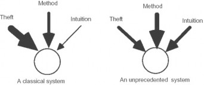
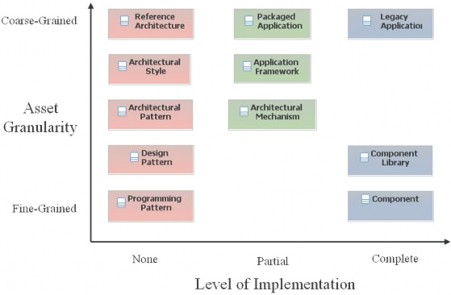
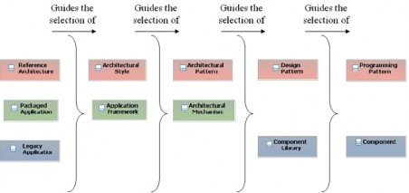
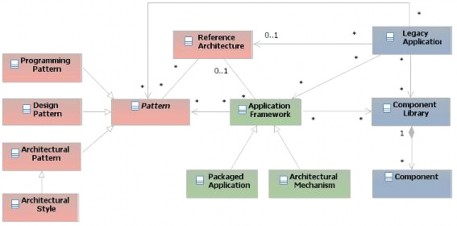
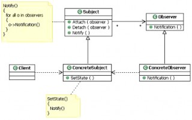
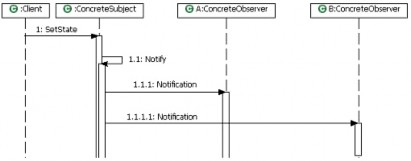

Peter Eeles September 15, 2007
from The Rational Edge: This article discusses the various kinds of reusable assets available to the software architect, explains their characteristics and interrelationships, and offers tips on how best to make use of them.
The life of a software architect is a long and rapid succession of
suboptimal design decisions taken partly in the dark. -- Philippe Kruchten
The purpose of this article is to shed some light on the darkness Kruchten1 refers to, by discussing a key characteristic of successful software architectures -- the use of reusable assets. From fine- grained programming idioms to large-grained, off-the-shelf packaged solutions, reusable assets provide a valuable vehicle for capitalizing on the work of other successful architects.
With the recent release of IBM® Rational® Asset Manager (See recent article ) Rational customers now have a better way to locate existing software assets, in order to reduce duplication of effort, reduce costs, improve software quality, and shorten time to market. But considerations around how to approach asset reuse from the perspective of the software architect can still present challenges. There are many different types of assets to consider, although the terms used to refer to them are not always consistent, and it is not always clear what value they provide. For example: What is the difference between an architectural style and a reference architecture? How does a mechanism differ from a framework?
In this article, I discuss the different types of reusable assets available to the architect, their characteristics and interrelationships, and how best to make use of them.
© Copyright IBM Corporation 2007 Trademarks
developerWorks® ibm.com/developerWorks/
Inspiration for deriving an architecture comes from many places, and will vary depending on many factors, including the novelty of the system, the development process or method being followed, and the skills of the architect. Kruchten suggests that there are three main sources of architecture: theft, method, and intuition, as illustrated in Figure 1.

Theft refers to the reuse of existing assets. Most elements of a software architecture are derived from a previous system of the same kind, another system with overall similar characteristics,
or an architecture found in technical literature. Method refers to a systematic way by which an architecture is derived from the system's requirements. Finally, intuition reflects the experience of the software architect, who recognizes some pattern or finds other inspiration for an architectural element.
The relative width of the arrows shown in Figure 1 indicates the relative emphasis of these three sources, depending on the novelty of the system. A classical system may comprise 80% theft, 19% method, and 1% intuition, and an unprecedented system may comprise 30% theft, 50% method, and 20% intuition. In either case, the reuse of existing assets is significant. Put another way, a good architect does not reinvent the wheel.
Clearly, considering reusable assets can significantly help architects in their work since this reduces the number of assets that must be created from scratch. Not surprisingly, successful architects tend to be conscious of the assets available. The reuse of assets within the project can have a significant bearing on the project schedule, cost, and quality of the delivered system.
In a general sense, reusable assets can be applied in all of the software engineering disciplines. For example, a reusable asset could represent a reusable requirement (a requirement that occurs over and over, within different systems), a reusable solution element (such as an architectural pattern or reusable code), a reusable test, and so on. In this article, I focus on those reusable assets that are of most relevance to the software architect (see Figure 2). Each type of reusable asset can be characterized across two dimensions: its granularity, and its level of implementation.
Bear in mind that the assets discussed here are based on my experiences in working with a number of clients. As there is no agreed-upon industry definition for the terms used to refer to
ibm.com/developerWorks/ developerWorks®
a number of these assets, I use these terms based on their meanings in the context of these experiences.

As shown in Figure 2, assets can be broadly categorized in terms of their level of implementation:
The different types of assets are not independent. For example, the selection of large-grained assets typically represents a major architectural decision on the project, which then constrains and guides the selection of finer-grained assets and so on. This interdependency within the selection of asset types is reflected in Figure 3.
developerWorks® ibm.com/developerWorks/

This is, of course, a gross generalization. But it does give some indication of the architectural significance of each of the reusable assets considered in this article.
The interrelationships among the various types of assets alluded to above are shown in more detail in Figure 4, which is a UML class diagram defining a metamodel of architectural assets.

Following are brief descriptions of each of the assets defined in this metamodel and how they relate:
Architectural Patterns, Design Patterns and Programming Patterns are all types of Patterns.
An Architectural Style is a type of Architectural Pattern.
A Pattern is used by any number of Reference Architectures, Application Frameworks and Legacy Applications.
A Reference Architecture makes use of any number of Patterns and Frameworks, and is used by any number of Legacy Applications.
An Application Framework makes use of any number of patterns, may make use of a Reference Architecture, and is used by any number of Legacy Applications.
ibm.com/developerWorks/ developerWorks®
A Packaged Application is a type of Application Framework.
An Architectural Mechanism is a type of Application Framework.
A Legacy Application makes use of any number of Patterns, Application Frameworks, Component Libraries, and may make use of a Reference Architecture.
A Component Library is used by any number of Application Frameworks and Legacy Applications, and contains any number of Components.
A Component is contained within a Component Library.
The term pattern is used to represent many different types of reusable elements, and so patterns represent probably the most general type of asset. According to the UML user guide2:
[A pattern is] a common solution to a common problem in a given context.
Since a pattern is such a general concept, it can be applied throughout the development lifecycle. Patterns come in many forms, including requirements patterns, architectural patterns, design patterns, programming patterns (referred to as idioms), testing patterns, project management patterns, process patterns, organizational patterns, and so on.
Given the importance of patterns to the architect, it is not surprising that the literature places significant emphasis on identifying patterns, and on techniques for documenting patterns. Applying lessons learned from civil engineering, the "patterns movement" has really gained momentum over the last ten years. There are many publications and websites dedicated to various types of
patterns, including platform-independent design patterns3, architectural patterns 4, and design patterns 5. The inspiration for these publications stems from the influential works of the building architect Christopher Alexander6 . There are even sources of antipatterns; for example:
[An antipattern is] a commonly occurring pattern or solution that generates decidedly negative consequences. An antipattern may be a pattern in the wrong context 7.
However, architects are particularly interested in those patterns that directly influence their work. These patterns are generally:
developerWorks® ibm.com/developerWorks/
Patterns are not only of interest to the architect in terms of reusing existing experience, but also are a valuable mechanism for defining elements of the solution that should be applied consistently. They represent an opportunity for the architect to share his or her knowledge with the project in a "codified" form. Although there are many templates for describing a pattern (or antipattern), there is much commonality between them. Most pattern descriptions include:
The name of the pattern
The context within which the pattern is used
The specific problem(s) that the pattern solves
The solution the pattern provides
Related patterns
You can also represent the pattern solution visually, in terms of both structure and behavior. Figure 5 is a UML class diagram showing the participants in the Observer pattern. One of the primary goals of this pattern is to remove the need for the subject to have any knowledge of the elements observing it. In this case, this is achieved by introducing a superclass (Subject) that maintains a list of observers.

In addition to showing the structure of a pattern, you can also show its behavior. Figure 6 is a UML sequence diagram showing how the structural elements within the Observer pattern collaborate.
This diagram shows the behavior when the subject is updated. This results in a notification message being sent to each observer, informing them that the subject has changed.

ibm.com/developerWorks/ developerWorks®
The point here is not to demonstrate the Observer pattern, but rather to show how architectural experience can be captured and communicated. Architects typically reuse patterns identified from external sources, and also define their own patterns to be used on the project, in order to ensure some level of architectural consistency. It is also, of course, more efficient to capture a pattern once, and note where it has been applied, rather than to describe every use of the pattern in detail.
Describing a pattern in a UML modeling tool also opens up opportunities to apply the pattern to a UML model. In this case, the roles defined within the pattern are played by elements in the model. The pattern is then applied, and the model is updated according to the pattern. For example, new relationships might be created, or new operations added that conform to the pattern definition. This capability can complement a model-driven development approach to software development.
Patterns in the broadest sense can also be applied to a particular class of problem -- when transforming an input to an output. For example, you might want to generate code from a UML model. The rules that govern the transformation could be specified as a pattern. Similarly, you can use the same philosophy when transforming from one model to another model. The concept of model transformation is one of the cornerstones of the Model Driven Architecture (MDA) initiative from the Object Management Group (OMG).
If such automation is made available, then it can be argued that the pattern has a partial implementation.
An architectural style is a type of architectural pattern that can help kick-start the process of moving from requirements to solution.
[An architectural style] defines a family of systems in terms of a pattern of structural organization. More specifically, an architectural style defines a vocabulary of components and connector types,
and a set of constraints on how they can be combined8.
An architectural style applies at the system level, and therefore has a major impact on the architecture. Also, a given system may exhibit more than one architectural style. Some examples
of architectural styles are shown below9.
developerWorks® ibm.com/developerWorks/
conducted electronically. This concept is also used in the energy sector for electricity, oil, and gas trading.
A reference architecture exhibits the same characteristics as any other architecture, with some important differences. The first difference is that it does not normally have a physical manifestation (as indicated in Figure 2), and is simply documentation; in the form of models, for example. The second is that it is often incomplete, in the sense that it contains "gaps" that must be plugged before it can be considered to represent a complete definition of the architecture of the system under consideration.
Reference architectures come in many different forms, reflecting the many different interpretations of architecture. They may, for example, be technology-independent or technology-specific.
Examples of reference architectures include a financial services reference architecture, the Java 2 Enterprise Edition (J2EE) architecture, and the .NET architecture.
An application framework (sometimes referred to as simply a framework) represents the partial implementation of a specific area of an application. Probably the most widely-known frameworks are those supporting user interfaces, such as Java Server Faces, and Microsoft ASP.NET. However, this thinking can also be extended to entire platforms, such as a J2EE implementation, or .NET. Such platforms can therefore be characterized as either a reference architecture or as an application framework.
As architects, we frequently characterize solution elements as mechanisms, such as "the mechanism for achieving X" or "this element is underpinned by mechanism Y." Examples of mechanisms include a persistency mechanism, an error logging mechanism, a communication mechanism, and a shopping cart. The distinction between a mechanism and a pattern is that a mechanism is more concrete and may have a partial implementation. A mechanism may also adopt several patterns. According to the IBM Rational Unified Process® (RUP®):
Architectural mechanisms represent common concrete solutions to frequently encountered problems. They may be patterns of structure, patterns of behavior, or both.
A packaged application is a large-grained Commercial-Off-The-Shelf (COTS) product that provides a significant amount of functional capability as well as reuse potential, such as a Customer Relationship Management (CRM) application, or an Enterprise Resource Planning (ERP) application.
The amount of custom development required is greatly reduced by using a packaged application, and the primary focus is on configuring the application. One of the areas focused upon is a fit/
ibm.com/developerWorks/ developerWorks®
gap analysis of how close the packaged application comes to satisfying the project requirements. However, it is also frequently the case that, when adopting a packaged application, it becomes necessary to accommodate any constraints the application imposes. In this sense, the use of a packaged application can have a "bottom-up" influence on the architecture.
The most widely understood form of reuse is with respect to implementation elements, such as individual components, and component libraries (or class libraries, or procedure libraries). An example of a component, in this context, might be a GUI widget, such as a table, provided in a particular technology. An example of a component library might be the Java class library, or the ADO.NET library for data access.
In this article, I define a component in the most general sense -- as simply an implementation element. A service in a service-oriented architecture (SOA) could, therefore, also be considered a component.
The largest, concrete, reusable asset that the architect might consider is an existing system. The use of such systems normally results in the need to integrate with the system, which is sometimes referred to as legacy integration or enterprise application integration (EAI). As for packaged applications, the level of reuse can be high, and the effort is focused on integration rather than custom development.
One of the key distinctions between packaged application development, enterprise application integration, and custom development, is the level of reuse of existing assets. When undertaking packaged application development or enterprise application integration, much of the architect's work is done, since you don't need to create large elements of the system. In addition, many of the significant decisions that an architect would make have already been made, and are manifest in the chosen applications being used.
The selection of such significant assets may also have a bearing on the approach taken to developing the system under consideration. For example, the selection of a packaged application may result in different software development practices being applied than if you were integrating a legacy system or building custom code. Quite often, a hybrid approach is taken since many software development projects apply many different types of reusable asset concurrently.
The last few years has seen a renewed focus on reusable assets as a means of accelerating project performance. The widespread acceptance of SOAs, for example, has led to a focus on how the associated reusable assets (services, in this case) are developed.
Underpinning such initiatives is a need to describe reusable assets. This is where the Reusable Asset Specification 10 (RAS) comes in. This is an OMG standard that fundamentally defines two
developerWorks® ibm.com/developerWorks/
aspects of a reuse strategy. The first is a standard for describing a reusable asset. The second is a standard for an interface to a RAS-compliant repository, referred to as a RAS Repository Service.
Of course, there is more to achieving successful asset reuse than understanding the types of assets available. However, additional considerations lie outside the scope of this article. In
particular, this article has not touched on the process for creating or applying the various asset types mentioned. This would include the roles that might exist in an organization in support of a strategic reuse initiative, the tasks that are performed (especially around the creation, use, and maintenance of assets), and any specific artifacts that might be produced that specifically
support a reuse initiative (such as an asset catalog). Also, this article does not address the broader implications on an organization, such as the embedding of a reuse "culture."
There are many different flavors of reusable asset at the disposal of the software architect, and the use of such assets can dramatically improve project performance when applied correctly. This article has attempted to provide an overview of commonly encountered assets available to the architect in his or her work, and how various reusable assets relate to one another.
I would like to thank Peter Cripps, Carlos Ferreira, and Glenn Mitchell for their feedback on early drafts of this paper.
From Mommy, Where Do Software Architectures Come From? Philippe Kruchten, 1st International Workshop on Architectures for Software Systems, Seattle, WA, 1995.
The Unified Modeling Language User Guide. Grady Booch, James Rumbaugh, and Ivar Jacobson, Addison Wesley, ISBN 0-201-57168-4, 1999.
Analysis Patterns -- Reusable Object Models. Martin Fowler, Addison Wesley, ISBN 0-201-89542-0, 1997.
Pattern-Oriented Software Architecture -- A System of Patterns, Frank Buschmann et al., John Wiley and Sons, ISBN 0-471-95869-7, 1996.
Design Patterns -- Elements of Reusable Object-Oriented Software, Erich Gamma, Richard Helm, Ralph Johnson, and John Vlissides, Addison Wesley, ISBN 0-201-63361-2, 1995.
Among Alexander's most influential works are:
Notes on the Synthesis of Form by Christopher Alexander, Harvard University Press, 1964.
A Pattern Language by Christopher Alexander, Sara Ishikawa, and Murray Silverstein. Oxford University Press, 1977.
The Timeless Way of Building by Christopher Alexander. Oxford University Press, ISBN 0-19-502402-8, 1979.
ibm.com/developerWorks/ developerWorks®
AntiPatterns: Refactoring Software, Architectures, and Projects in Crisis. William Brown, Raphael Malveau, Hays McCormick, and Thomas Mowbray, John Wiley and Sons, ISBN 0-471-19713-0, 1998.
Software Architecture: Perspectives on an Emerging Discipline. Mary Shaw and David Garlan, Prentice Hall, ISBN 0-13-182957-2, 1996.
These and other architectural styles are described in Shaw (above) and also in Software Systems Architecture -- Working with Stakeholders using Viewpoints and Perspectives by Nick Rozanski and Eoin Woods, Addison Wesley, ISBN 0-321-11229-6, 2005.
Reusable Asset Specification, Object Management Group, Inc. Document number 04-06-06, June 2004.
© Copyright IBM Corporation 2007 (www.ibm.com/legal/copytrade.shtml) Trademarks (www.ibm.com/developerworks/ibm/trademarks/)